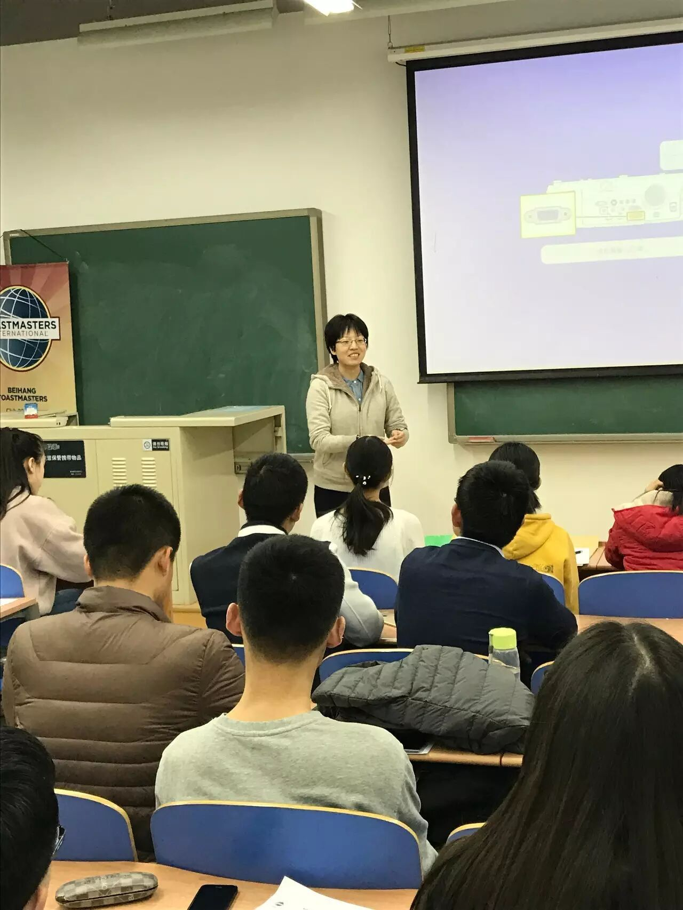
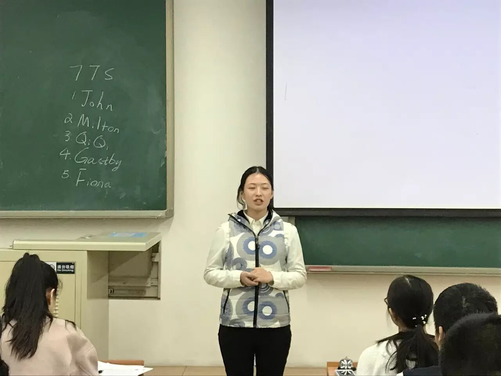
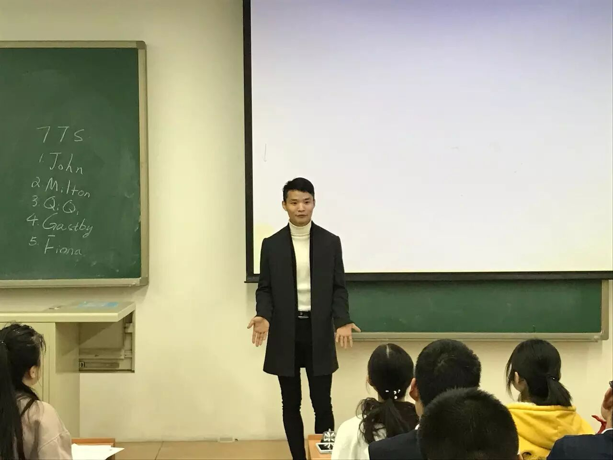
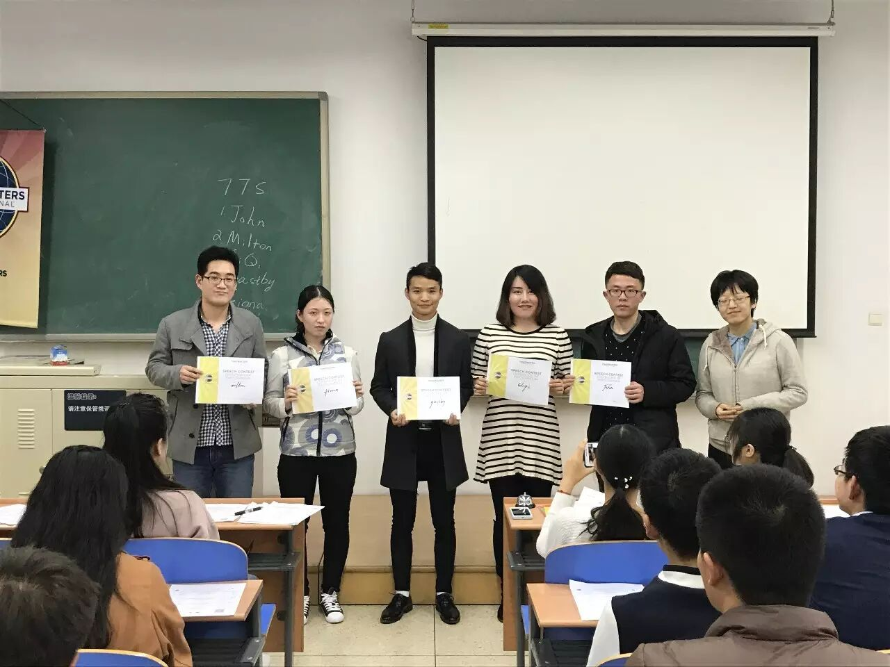
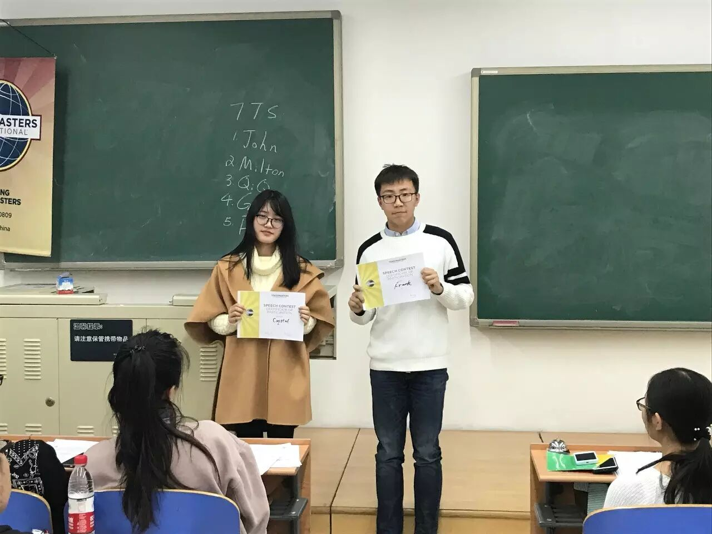
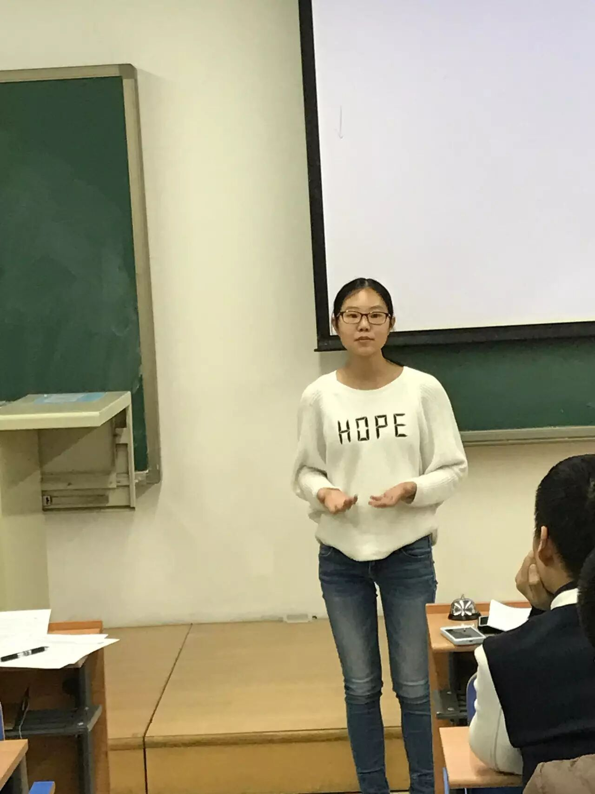
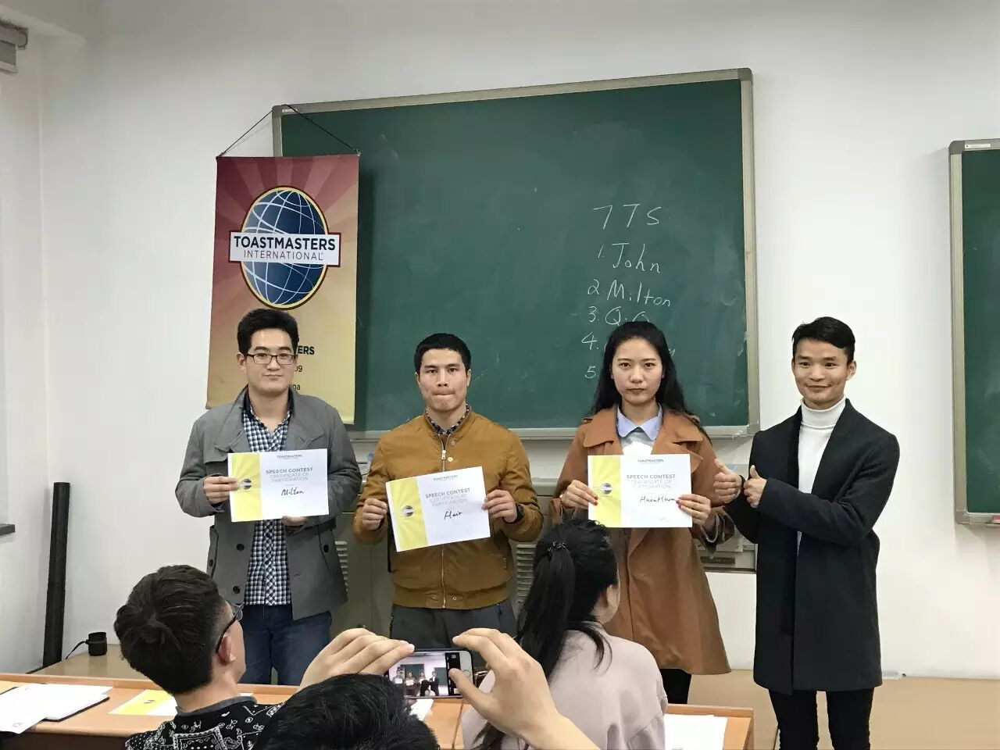
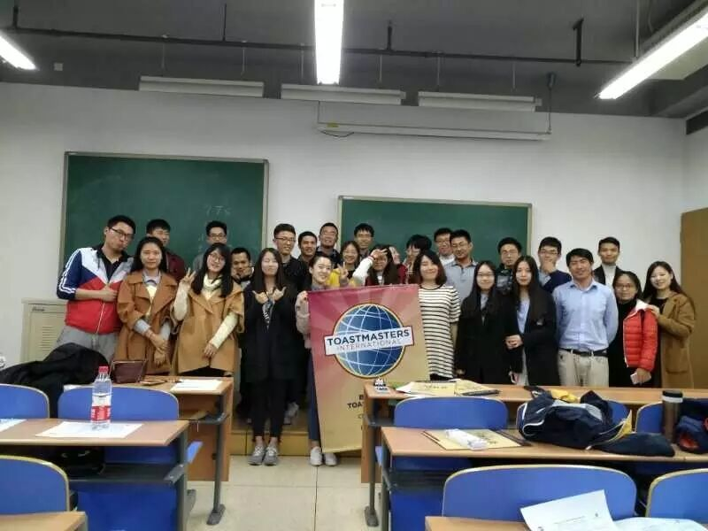

The English table topic contest, As a senior and chair of contest, Doris have been hold this meeting. Her fluent and tender Cockney English very fascinating. And she give us the table topic theme is that if you able to have a time travel, What time will you choose and why?John said he want to return to secondary school, Because of that time isfree time, He can do everything if he wants, Indeed, Perhaps, This is what we really grew up the more the more alone.

Fiona said she want to return to her high school, and then tell herself at
Gasby not only wants to return to his four years old, But also he miss his
Qiqi said she want to return to Tang, Because of people will proud of the
中文演讲比赛，我想大家肯定首先想到我们的时间官Joy，台上一分钟，台下十年功，Joy作为头马老人，对此深信不疑。她没有让时间官的工作变得枯燥和一成不变，她精心为"时间官"创作了一首诗来介绍时间官的角色。大家想必已经等不及了吧？这首诗“深深”给它起名为：时间的期待。

下面我给大家找到了这首诗：告别了2016，在2017的新学期里，你我相信在春季的赛场上
一切刚刚好，没有多一分，没有少一秒
你们热情四射的活力
把我的心融化
你们忙里忙外的辛勤耕耘
把我的期待点燃
亲爱的，多么渴望
听你诉说，听你演讲，听你分享属于你的故事
无论它是关于情感、学习、工作，抑或琐碎的生活
我们都乐于见证你的成长
无论它是幽默的，激昂的，深情的，亦或严谨的
我们的巴巴掌都已经为你准备好了
当然，我们也不是空手而来
我们也准备了礼物
这份礼物，叫作时间的期待
是为了让我们的相遇留下更多美好的记忆
期待你的诉说时间
多于4分半，少于7分钟
因为那是我能与你的故事产生共鸣的最佳时段
相遇就是这么的奇妙，它强调刚刚好
5分不错，6分正好，7分请即刻收场
否则，你的故事可能错失遇见更多人的机会
亲爱的，那是我最不想看到的结果
但请你，不要把这份礼物看得过于沉重
不管怎样，自然表现，巴巴掌就会啪啪响
各位中文参赛者，你们愿意收下这份礼物吗？
HuanHuan 给了我们她出色的演讲，生活中的“双标”现象普遍严重，再加上自己经历过的“双标”，她借这次演讲机会，告诫我们不要从众“双标”。非常感谢她的精心准备，她应该获得第一名。
Flair是一个比较念旧的人，他的演讲总是绕不过自己之前的一些经历，这次他分享的是自己追求初中校花的经历，是不是坚持就一定是对的？或许我们应该思考事情本身，错误的事情就不应该再坚持了，没有意义。
Milton的演讲非常的长，他拒绝了Joy的“时间礼物”---让自己的演讲保持在5-7分钟 。下次或许要多练习，控制好时间，这样才能让你的演讲成为一个合格的演讲。他借用古时候“范雎”的故事，说明恶和善没有很大的界限，善恶只是一念之差，没有绝对的恶，也没有绝对的善，感谢你的演讲，我们都很喜欢。

这次比赛，我们的参赛者都有比较大的进步，都是觉得自己的演讲表现和自己的精心准备分不开，希望我们的参赛者下次多准备和练习，给我们的观众一个最好的演讲。同时希望第一次来我们头马俱乐部的小伙伴们，如果觉得我们好，就加入我们吧。
下面来一张我们的合影吧！
